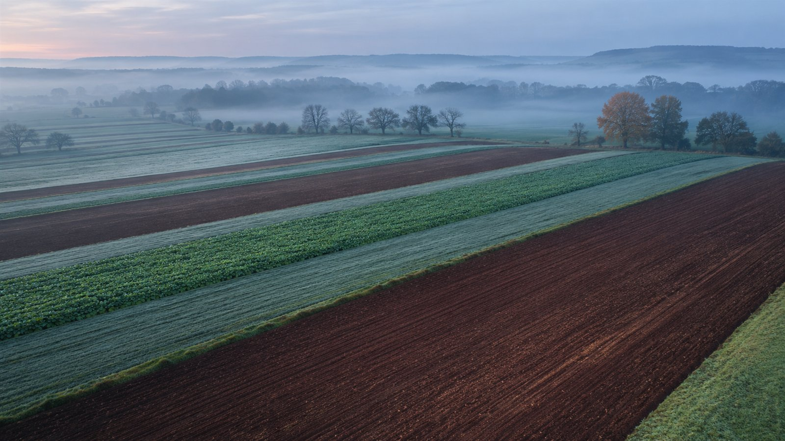
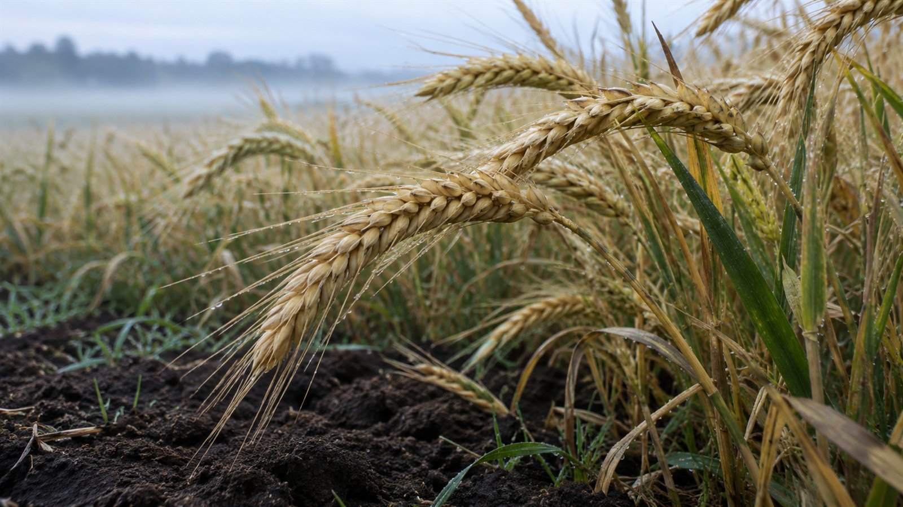
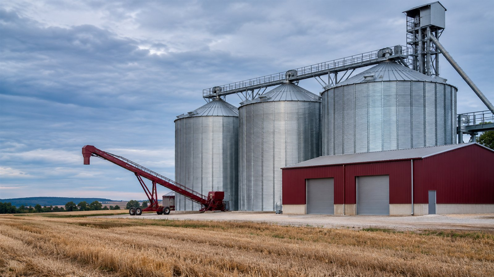

Планируем
Анализ почвы, подбор культур и подготовка техники.
Растениеводство, хранение и подготовка партий.
Последовательная работа от почвы до отгрузки.

Каждый сезон начинается с того,
что осталось после предыдущего.
Анализ почвы, подбор культур и подготовка техники.
Подготовка полей, посев и наблюдение за всходами.
Уход за посевами и контроль состояния растений.
Уборка, подготовка к хранению и формирование партий.
После уборки начинается подготовка почвы к следующему сезону.

Ассортимент и параметры партии уточняются под запрос покупателя.
Согласуем назначение, показатели качества и условия приёмки зерна.
Для запроса нужны культура, требования к качеству и базис поставки.
Подготовка партии, контроль условий хранения и отгрузка рассматриваются как единая цепочка.

Культура, назначение, показатели и объём запроса.
Наличие, образцы, базис и порядок проверки качества.
Комплект документов, транспорт и условия передачи.
Растительные остатки и защита от эрозии
Структура, влага и питание растений
Наблюдения, анализы и план обработки
Пример — концепт для портфолио
Демонстрационная структура документа с идентификацией партии и показателями исследования. Реальные результаты и показатели не приведены.
Для фактической культуры и назначения проверяют необходимый комплект. Действующие декларации, сертификаты и фитосанитарные документы в концепте не заявлены.
Условный отдел поставок
crop@pochva-tsikl.example
Опишите культуру, требования к партии и условия доставки.
Пример — концепт для портфолио. Изображения созданы ИИ и показывают вымышленные объекты.